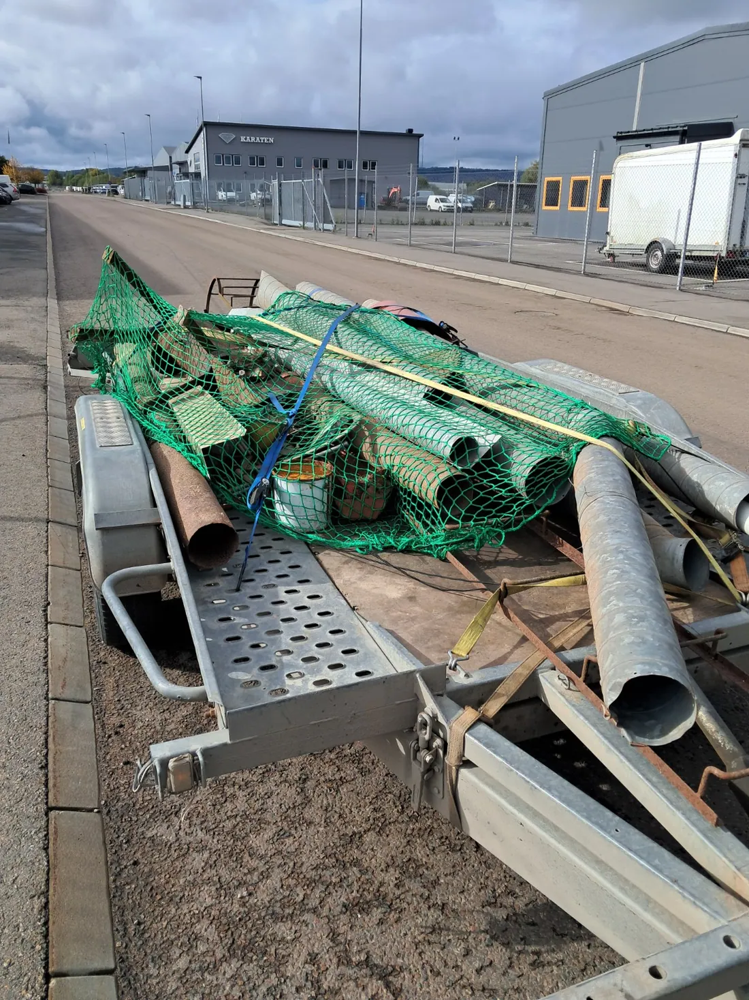
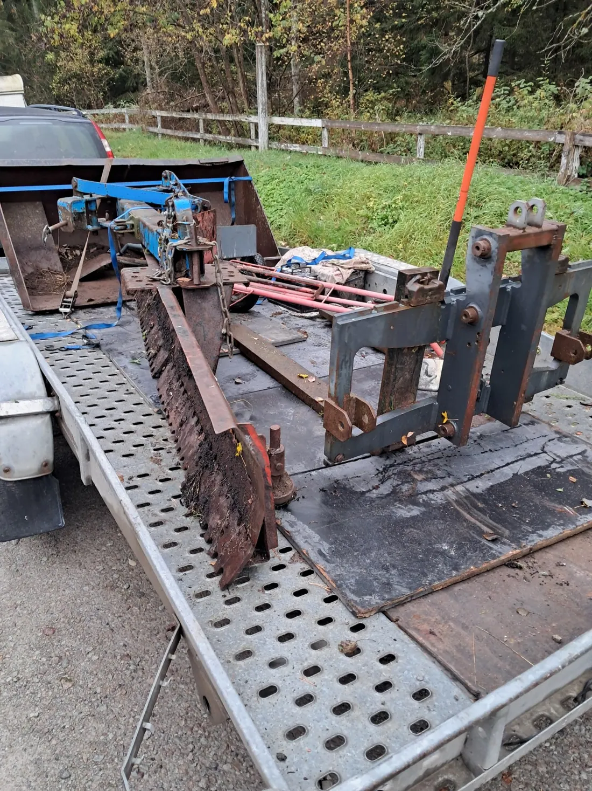

Metallpartier
Järn, stål, aluminium, koppar, mässing och andra metaller kan vara intressanta när vi vet vad partiet innehåller och hur mycket det omfattar.
Har du metall, maskindelar eller gamla redskap som blivit stående? Vi bedömer om materialet kan köpas, hämtas eller få nytt liv genom återbruk. Börja med några bilder.
Vi har bas i Hjo och tar emot förfrågningar från Tibro. Hämtning sker efter individuell bedömning och överenskommelse.
Det är inte alltid enkelt att avgöra vad som är skrot och vad som går att använda igen. Vi utgår därför från föremålen och deras skick – inte bara metallvikten.
Järn, stål, aluminium, koppar, mässing och andra metaller kan vara intressanta när vi vet vad partiet innehåller och hur mycket det omfattar.
Uttjänta maskiner, elmotorer och tyngre maskinkomponenter kan ha värde både som delar och material.
Äldre redskap, reservdelspartier, verkstadsutrustning och sådant som blivit stående kan ofta vara värt att bedöma innan det slängs.
Exemplen innebär inte att vi automatiskt tar emot alla typer av skrot. Vanligt hushållsavfall, osorterade sopor och fullständig sophämtning ingår normalt inte.
En trasig maskin kan ibland vara värdefull genom sin motor, växellåda, sina hjul eller andra delar. På samma sätt kan äldre redskap vara användbara även om de inte längre används av ägaren.
Vi tittar på om objektet kan användas, repareras eller demonteras för reservdelar innan vi bedömer materialvärdet. Det betyder inte att varje objekt har ett ekonomiskt värde.
Läs mer om hur vi arbetar med återbruk →Har du främst en åkgräsklippare, traktor eller annan maskin att sälja? Då kan vår guide om att sälja maskin i Tibro vara en bättre startpunkt.
Sälja maskin i Tibro →De här bilderna visar exempel på metall och äldre utrustning vi arbetar kring. De är inte dokumentation av specifika hämtningar i Tibro.


Vi vill göra det enkelt att få ett första besked. Du behöver inte själv känna till varje metalltyp eller reservdel.
Visa vad du har och ungefär hur mycket.
Ange ort, åtkomlighet och lastmöjligheter.
Vi återkommer med frågor eller förslag på upplägg.
Pris, eventuell kostnad, hämtning och tid bestäms innan något genomförs.
Materialets typ och mängd spelar roll, men också transport, framkomlighet, lastning och arbetstiden. Ett enstaka tungt objekt kan kräva mer planering än ett redan sorterat parti som är enkelt att lasta.
Det kan bli aktuellt med köp, hämtning utan ersättning eller en betald tjänst. Vi lovar därför aldrig ett visst ekonomiskt upplägg innan vi sett underlaget.
Nej. Vi bedömer främst metall, maskindelar, äldre redskap och andra objekt som passar vår verksamhet. Vanliga sopor och blandat hushållsavfall ingår normalt inte.
Det beror på vad det är, var det står och vilken transport och arbetsinsats som krävs. Skicka bilder så kan vi avgöra om hämtning är rimlig.
Inte automatiskt. Ett upplägg kan innebära köp, kostnadsfri hämtning eller en kostnad för tjänsten beroende på material, mängd och förutsättningar. Vi kommer överens i förväg.
Ja, även trasiga eller ofullständiga maskiner kan vara intressanta för reservdelar eller återbruk. Vi bedömer varje förfrågan.
Börja gärna med att beskriva ungefär vad du har och skicka översiktsbilder. Om sortering behövs tar vi det i nästa steg.
Vi behöver gärna bilder, ort, ungefärlig mängd, vilka material eller föremål det gäller och om det går att köra fram och lasta.
Ja. Vi tittar gärna på maskindelar, utrangerad utrustning och metallpartier från verkstäder och andra verksamheter. Även större mängder bedöms individuellt.
Skicka några bilder, ungefärlig mängd och var materialet finns. Då kan vi börja med en bedömning.